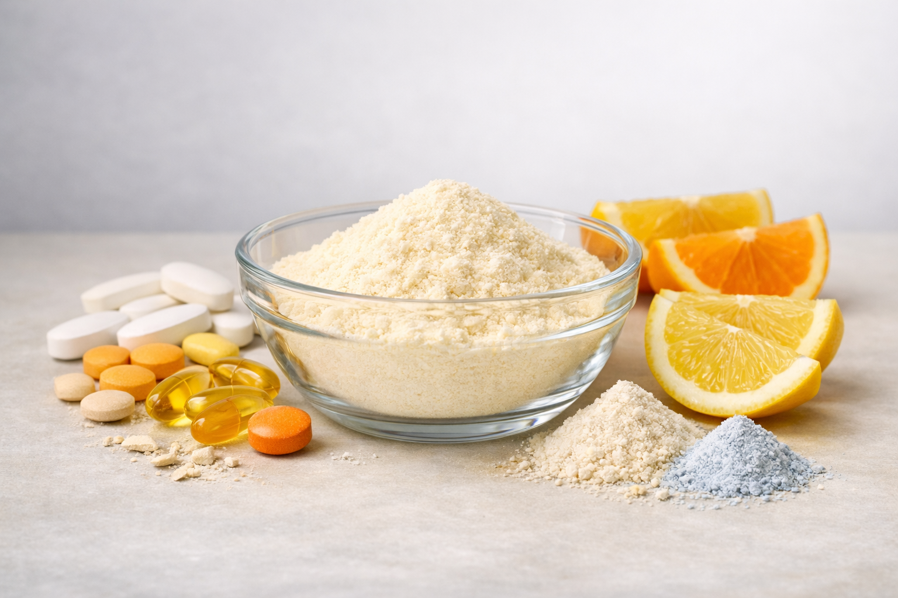

トリポリリン酸ナトリウム (STPP)
CAS: 7758-29-4
食肉・水産物加工の保水性と食感の調整に用いる食品用STPPです。仕様が配合および市場の要件に適合するか比較してください。
食肉加工 水産物加工 食品用リン酸塩 製品を見る製品名、略称、CAS番号
業種別ソリューション
6つの産業分野に向けた原料の機能、用途ガイド、製品群をご覧ください。必要なグレードと仕様は分野ごとに異なります。
主要製品群
6つの製品カテゴリーをご覧ください。以下に紹介する食品原料は、各グレードの製品情報にリンクしています。飼料用・工業用の要件については、各カテゴリーのページをご覧ください。
CAS: 7758-29-4
食肉・水産物加工の保水性と食感の調整に用いる食品用STPPです。仕様が配合および市場の要件に適合するか比較してください。
食肉加工 水産物加工 食品用リン酸塩 製品を見るCAS: 10124-56-8
金属イオン封鎖と配合安定性に用いる食品用ポリリン酸ナトリウムです。食品加工用途に合わせて、市販グレードと仕様を確認してください。
食品加工 金属イオン封鎖 配合安定性 製品を見るCAS: 7320-34-5
緩衝、金属イオン封鎖、乳化を必要とする、使用が認められた食品用途向けの食品用ピロリン酸カリウムです。配合試験でグレードを選定してください。
食品加工 緩衝 金属イオン封鎖 製品を見る酸性SALP · INS 541(i)
酸性SALPは、製パン・製菓の膨張剤系で炭酸水素ナトリウムと組み合わせて使用する食品用酸剤です。工程に合わせて中和価と反応特性を比較してください。
製パン・製菓 膨張剤用酸剤 製パン・製菓システム 製品を見るCAS: 7757-93-9
カルシウム・リン供給原料の選定および生地改良用途向けの食品用無水リン酸水素カルシウムです。必要に応じて、別グレードの二水和物と比較してください。
無水DCP 食品用途 リン酸カルシウム類 製品を見るCAS: 10031-30-8
食品用リン酸二水素カルシウム一水和物は、製パン・製菓の膨張剤系で炭酸水素ナトリウムと組み合わせて使用する酸剤です。混合条件と焼成条件に合うグレードを選んでください。
一水和物 製パン・製菓 膨張剤用酸剤 製品を見るCAS: 9004-32-4
食品用カルボキシメチルセルロースナトリウムは増粘剤・安定剤です。対象となる食品配合の粘度、置換度、分散性の要件を比較してください。
食品の増粘 安定化 ハイドロコロイド 製品を見るCAS: 4075-81-4
食品用プロピオン酸カルシウムは、パンなどの製パン・製菓製品の防かびに使用されます。効果は配合、工程、包装、保管条件によって異なります。
製パン・製菓 パン 防かび 製品を見る専門分野
リン酸塩の各系統を、化学物質の種類、グレード、機能、用途で比較してください。Bespringは、加工業者、配合開発者、販売業者の仕様照合と製品の適格性確認を支援します。
調達支援
製品、グレード、主要仕様、数量、仕向け先をお知らせください。当社の輸出チームが、見積りに必要な製品情報と出荷の詳細を調整します。
含有量、不純物上限、粒径、pH、物理的形態、試験方法を、目標仕様と比較してください。
最新の仕様書またはTDS、SDS、COAの見本、該当する品質・規制関連書類をご依頼ください。
サンプルが適格性確認の対象グレードを代表するよう、用途と評価基準を定めてください。
包装容量、パレットまたはコンテナ要件、仕向港、インコタームズ条件、船積書類の要件を確認してください。
原料の形態、用途、規格値、試験方法を照合します。製品名・略称・CAS番号で検索する
製品名、グレード、用途、数量、荷姿、納入先、必要書類をお知らせください。見積りを依頼する
2014年に中国・江蘇省で設立されました。原産地や品質に指定がある場合は、見積依頼時にお知らせください。会社概要
納入場所または仕向港、荷姿、必要書類を確認します。国際調達の手引き
提案された製造・包装拠点とグレードを確認します。受入時は包装と分析証明書のロット番号を照合してください。供給元とロットの確認方法 ・ 品質書類
用途に関するノウハウ
食品、飼料、水処理、工業用途向けの原料選定・工程ガイドをご覧ください。製品比較や自社試験の枠組みづくりにお役立てください。

トリポリリン酸ナトリウム · INS 451(i)
食肉・家禽製品の水分管理、食感、乳化安定性、安定した加工を支えるリン酸塩の実用的な応用例。
用途ガイドを読む
ピロリン酸四カリウム · INS 450(v)
緩衝、金属イオン封鎖、水分管理を必要とする、使用が認められた水産物配合向けのカリウム系リン酸塩の機能。
用途ガイドを読む
プロピオン酸カルシウム · E282
パン、ロールパンなどの酵母発酵による製パン製品について、防かびと保存期間の設計に重点を置いた保存料の応用例です。
用途ガイドを読む
リン酸二水素カルシウム · 飼料グレード
家禽用飼料やプレミックスに利用可能なリンとカルシウムを供給するミネラル飼料原料の応用例。
用途ガイドを読む
ヘキサメタリン酸ナトリウム · CAS 10124-56-8
金属イオン封鎖としきい値効果を利用して、工業設備のスケール管理を支える水処理の応用例。
用途ガイドを読む
トリポリリン酸ナトリウム · 工業グレード
粉末洗剤配合における軟水化、汚れの懸濁、洗浄性能を支えるビルダーの応用例。
用途ガイドを読むSTPP · SHMP · TSPP · TKPP · 混合製剤
正味歩留まり、解凍損失、加熱損失、官能品質で評価する工場試験の枠組み。
用途ガイドを読むSAPP · SALP · MCP · DAP · 混合製剤
反応速度、中和価、ガス発生のタイミングを、混合、保持、焼成条件に合わせてください。
用途ガイドを読む
DSP · DKP · MKP · TKP · リン酸
pH調整、耐熱安定性、乳化、ナトリウム目標値、保存期間を評価する配合スクリーニング。
用途ガイドを読む
TCP · DCP · MCP · MKP
元素含有量、純度、粒径、分散性、性能に基づいてミネラル用リン酸塩を選んでください。
用途ガイドを読む食品用、飼料用、工業用化学品の調達に向けた、仕様に基づく原料選定ガイダンス。
STPPとSHMPを、化学物質の種類、機能、グレード、仕様、物理的形態、供給者の適格性確認要件で比較してください。
ガイド全文を読む →MCPまたはDCPを調達する際は、栄養成分の種類、含有量、物理的形態、汚染物質上限、書類を比較してください。
詳しく見る →化学品の国際発注前に、仕様書、SDS、COA、証明書、ラベル、船積書類の整合性を確認してください。
詳しく見る →グレード、仕様、不純物上限、製造管理、市場への適合性によって、承認判断の根拠がどのように変わるかを理解してください。
詳しく見る →よくあるご質問
まずリン酸塩の製品一覧で化学種と用途を確認し、該当するグレードの規格値と試験方法を照合してください。
製品、用途、グレード、規格、概算数量、荷姿、納入先をお知らせください。試作品の場合は評価の目的と合格基準も記載してください。